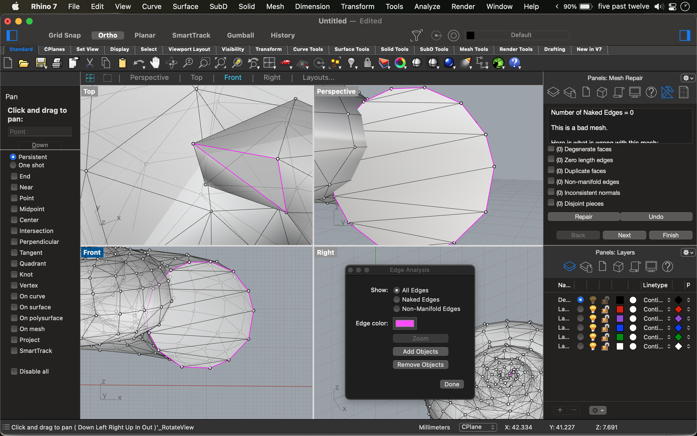
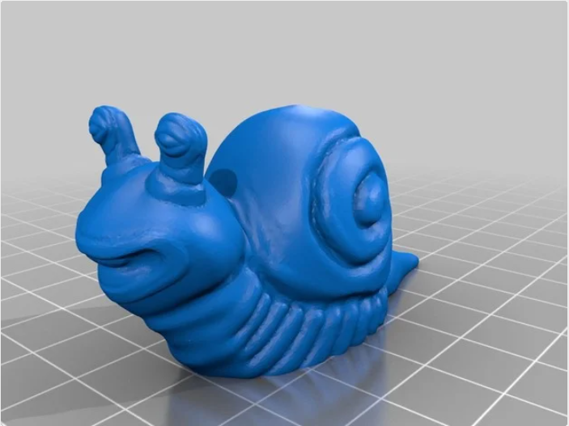

A4: Getting Meshy! and Lamps!
For Part 1, I modified two STLs into a printable STL for the assignment.
As a start, I needed to select two STLs, but had trouble choosing which objects to go with. I decided to use a random generator!

Alright, snail shell and carrots it is! I went on Thingiverse to look for an STL of a snail shell and carrot.


Credit to: Alajaz and wojtekgr
First, I loaded the snail shell STL into Rhino. I "ReduceMesh"ed the snail shell from 7,000 to 1,000 polygons and checked that it was a closed mesh.
After, I checked the mesh using "MeshRepair, which the wizard showed that it was "a bad mesh." Specifically, the error was that one of the face normal differed from the vertex normals.

With the help of Google and Pascale Golay, I was able to fix the issue by using "UnifyMeshNormals" and "RebuildMesh."
I re-ran "MeshRepair," which fixed the above problem. However, it was still throwing an error.
There were no naked edges, mesh holes, non-manifold mesh edges, issues with enclosed volume, etc...but the mesh "was self intersecting."
I didn't really know how to isolate what was self intersecting, though eventually figured it out by selecting "All Edges" in "Edge Analysis."
It seemed the shell was self-intersecting at the beginning and end of the shell.

I "Explode"ed the mesh and tried to manually move the points, though it just ended up creating a ton of naked edges.
I also tried to create meshes using "FillMeshHoles," which seemed to have fixed the self-intersecting areas identified in "Edge Analysis."
However, when I tried to "meshrepair," it still kept throwing the self-intersecting error. I tried to isolate the additional self-intersecting areas using "Edge Analysis," but didn't find any.
At this point, I was running out of mental power, ideas, and time. The initial snail shell STL also seemed pretty complicated, so I decided to move on and look for another STL file.
I found a different STL file for the snail shell and loaded it into Rhino. I "ReduceMesh" the snail shell to 1,000 polygons.

Credit to: cerberus333
For my second item, I imported the carrot STL file. I didn't need to "ReduceMesh" because it was already at ~1,000 polygons.
I ran "MeshRepair" and validated that both meshes were good.
Next, I used "meshtoNURB" to change from mesh to NURB.
It was a success (and didn't take too long unlike what happened in class). I had two closed meshes and two closed polysurfaces!

Finally, I "booleanunion"ed the two polysurfaces to create the carrot-snailshell STL.
I definitely felt disappointed and incomplete because of the first failed attempt at the snail shell.
Although as I reflect on it, I was proud of the learning journey I went on. I used Google, tried troubleshooting, and even learned a few new commands!
For example, we emphasized naked edges, mesh holes, etc. in class, but on my solo journey, I came across "UnifyMeshNormals," "RebuildMesh," and "FillMeshHoles."
Anywho, here's the final STL product - a snail-a-corn (because it looks like a cross between a snail and a unicorn).

The STL File